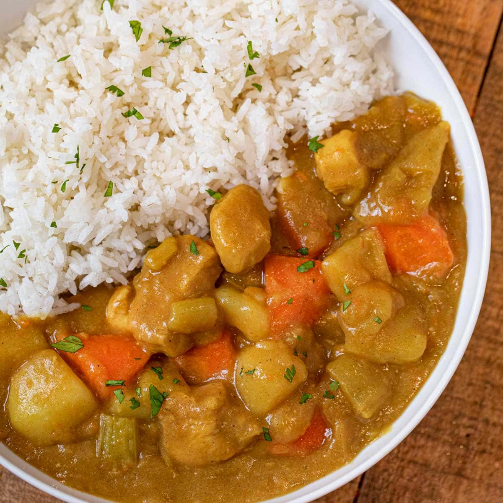

Curry

Description
A very easy and very tasty and also somewhat healthy lunch/dinner dish
Ingredients
- Box of golden curry squares
- 1-2 whole potatoes
- Several stalks of carrots
- 1 onion
- Beef or chicken breasts
- Beef or chicken stock
- White rice
- Water
Steps
- Cut the potatoe(s) into bite sized chunks. Let them sit in a bowl filled with cool water.
- Season the meat
- In a pot on high heat, cook the meat for several minutes.
- Add your onions and carros. Wait for the onions to gain some color.
- Add the potatoes to the pan.
- Pour 4 cups of meat stock and 1 cup of water into the pan.
- Close the pot with a lid and let it sit on high heat for around 5 minutes.
- Add small squares of curry to the pot and mix well.
- Close the lid and let the pot sit on medium heat for another 5 minutes.